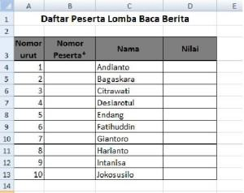
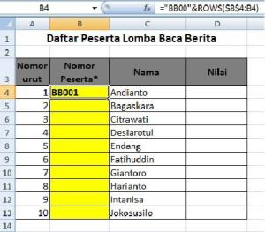
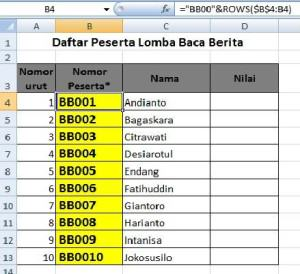

Penomoran gabungan teks dan angka
Format seperti KD-001 atau NIS/2026/015 dibuat dengan menyambung teks dan angka yang diformat dengan TEXT.
="KD-"&TEXT(ROW()-1;"000")
| & | Menyambung teks |
|---|---|
| TEXT(angka; "000") | Mengubah angka menjadi teks tiga digit dengan nol di depan |
Langkah praktik
- Ketik ="KD-"&TEXT(ROW()-1;"000") di sel pertama.
- Tekan Enter, hasilnya KD-001.
- Seret ke bawah untuk KD-002, KD-003, dan seterusnya.
Tangkapan layar praktik


